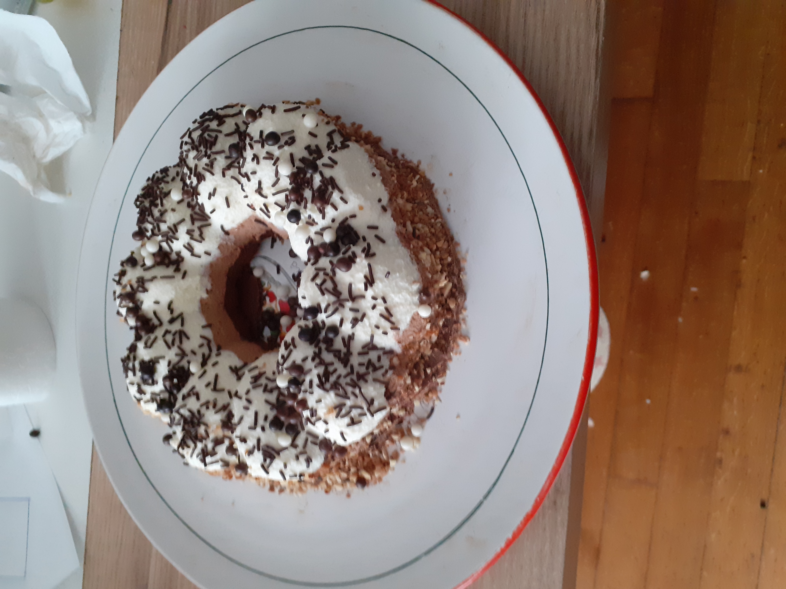

Le 3 chocolats

Pour le streusel :
Mousse au chocolat blanc :
Temps de préparation : 2h
Temps de repos : 1h
Temps de cuisson : 30 min
Difficulté : Moyenne
Ingrédients (8 personnes) :
Ingrédients:Temps de repos : 1h
Temps de cuisson : 30 min
Difficulté : Moyenne
Ingrédients (8 personnes) :
Pour le streusel :
- 10 g de beurre (à température ambiante)
- 10 g de cassonade
- 10 g de poudre d’amandes
- 10 g de farine
- 1 œuf
- 15 g de miel d’acacia
- 25 g de sucre
- 15 g de poudre d’amandes
- 1,5 g de levure chimique
- 24 g de farine type 45
- 5 g de cacao en poudre non sucré
- 24 g de crème liquide
- 28 g de beurre
- 13 g de chocolat noir
Mousse au chocolat blanc :
- 40 g de lait entier
- 1 g de gélatine
- 60 g de chocolat blanc
- 80 g de crème fleurette
- 40 g de lait entier
- 1 g de gélatine
- 60 g de chocolat au lait
- 80 g de crème fleurette
- 40 g de lait entier
- 1 g de gélatine
- 40 g de chocolat noir 70%
- 80 g de crème fleurette
- 210 g de sucre en poudre
- 75 g d’eau
- 70 g de cacao en poudre non sucré
- 145 g de crème liquide
- 8 g de gélatine
Étapes :
- Le streusel:
Mélangez tous les ingrédients à la main jusqu’à obtenir une pâte friable. Déposez-la sur une plaque recouverte de papier cuisson et enfournez à 150°C pendant 10 minutes. Réservez. - Le biscuit au chocolat:
Fouettez l’œuf, le miel et le sucre. Ajoutez la poudre d’amandes, la levure, la farine tamisée et le cacao. Faites fondre le chocolat, le beurre et la crème, puis incorporez au mélange. Versez dans un cercle de 18 cm, parsemez de streusel, et enfournez à 160°C pendant 20 minutes. Laissez refroidir et découpez pour ajuster à votre moule. - Les mousses:
Pour chaque mousse, trempez la gélatine dans de l’eau froide 10 min. Faites fondre le chocolat concerné, chauffez le lait, y dissoudre la gélatine puis versez sur le chocolat. Ajoutez 80 g de crème montée délicatement et coulez dans le moule. Réservez au congélateur 30 min entre chaque couche : blanc, lait, noir. - Le glaçage miroir:
Faites chauffer la crème. Dans une casserole, portez à ébullition l’eau, le sucre, puis tamisez et incorporez le cacao. Ajoutez la gélatine égouttée, la crème chaude, mixez. Laissez refroidir à 30°C. - Montage et glaçage:
Sortez l’entremets du congélateur, démoulez-le, déposez sur une grille. Versez le glaçage miroir en évitant les coulures. Laissez figer, puis décorez selon votre envie.